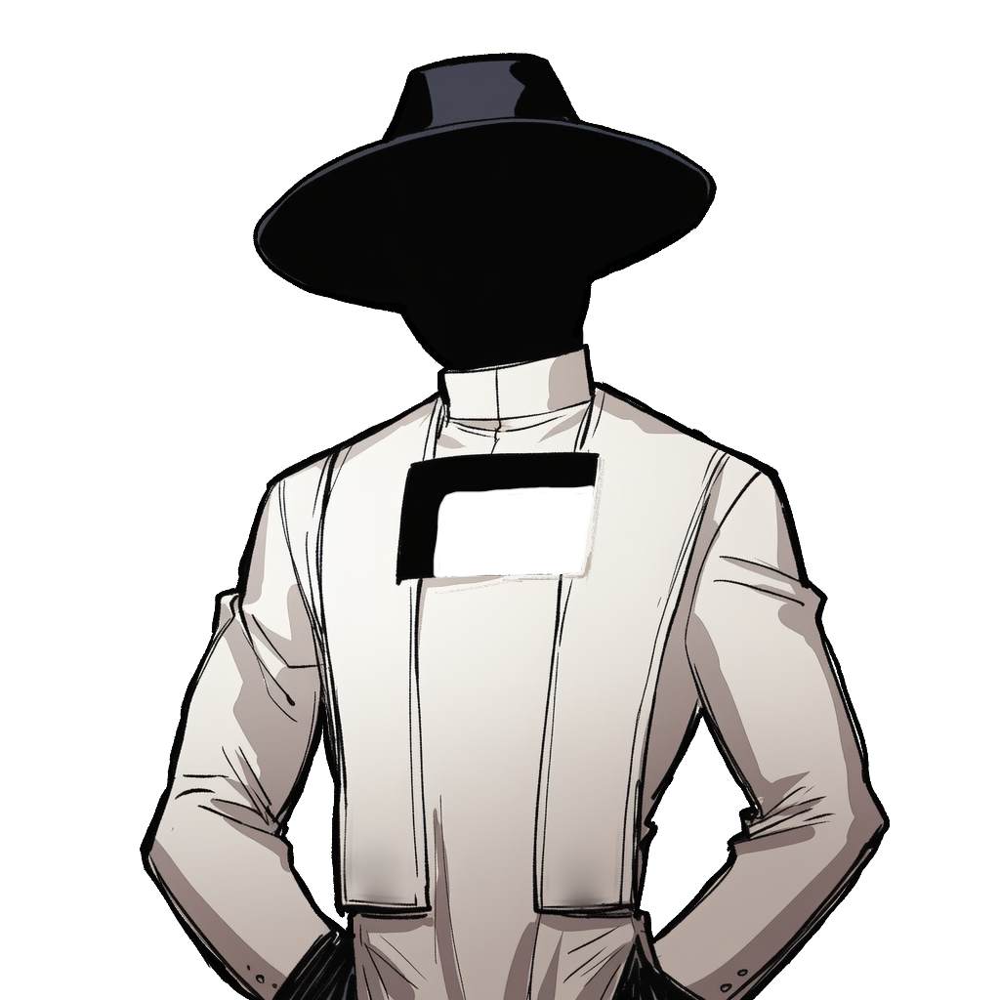

[수신]: 보안데스크 장수영 주임 (스켈레톤)
[발신]: 마왕물산 대표이사 마왕 (사장실 직통)
[등급]: Level 1 최고 보안 기밀
그래서 위대하신 마왕님은 깨달으신 거다. '진짜 정복은 돈으로 하는 거다' 라고. 적대적 M&A로 합법적으로 세상을 집어삼킨 게 바로 우리 '마왕물산'이다.
문제는 평화가 오고 밥줄이 끊긴 '용사' 놈들이 몬스터 가죽을 뒤집어쓰고 위장 취업을 시도하는 거다. 한 놈이라도 회사 안으로 들여보낸다면 즉각 해고(물리적 파괴)다. 아래 일자별 용사 감별 지침을 철저히 머리에 때려 박아라.
※ 실패 시, 퇴근은 지옥에서나 하도록.
社長之印

장 수 영 (Jang Su Young)
마왕물산 보안데스크 총괄 PM / 기획 / 디자인
#밸런스형기획자 #사축보안주임 #테크니컬기획 #UIUX디자이너
📧 이메일: jang9610@gmail.com
주소: C:\MawangMulSan\Security_Log
📋 PM 및 게임 시스템 기획 성과 요약
1. 2인 개발 체제 완벽 리드 및 PM 총괄
팀장의 조기 이탈로 인해 개발(강다영) 1명과 기획/디자인(장수영) 1명의 극단적인 2인 체제로 재정비되었습니다. 스케줄링을 단독 진행하여 프로토타입(4/3) 시연, FGT(4/17) 테스트, 최종 빌드 마감(4/28)까지 일정 지연 없이 완수하였습니다.
2. 코어 루프 수립 및 기획 선행 원칙 확립
게임의 핵심 순환 구조인 [심문 ➔ 판정 ➔ 정산 ➔ 상점]의 흐름을 최초 기획하여 문서화(SSOT)하였으며, 구두 회의의 혼선을 없애기 위해 '문서 선행 원칙'을 도입하여 소통 비용을 40% 이상 절감시켰습니다.
3. 경제 밸런스 및 엔딩 조건 설계
비자금(밀수 뇌물) 2,000G 달성 여부와 신뢰 포인트(감사관 심사 성공) 15점 달성 조건에 따른 4종의 멀티 엔딩 시스템(영앤리치 / 카르텔 / 우수 사축 / 해고) 설계 및 마이너스 통장 진입 시 즉시 해고(파산) 등의 세부 경제 밸런스를 구현했습니다.
4. 레포지토리 바로가기
🎨 비주얼 아트 & UI/UX 디자인 성과
1. 피그마(Figma)를 통한 시각적 기획 제안 및 설득
이남기 팀장 체제 당시, 머릿속의 독창적인 게임 연출과 보안 데스크 컨셉을 개발진에 확고히 증명하고자 직접 작동 가능한 피그마 프로토타입을 제작하였습니다. 컨셉 시연 발표를 통해 팀원들을 효과적으로 설득하고, 프로젝트의 전체 비주얼 및 기획 방향성을 수립하는 리더십을 발휘했습니다.
2. 7종 등장 종족 및 사내 비주얼 컨셉 기획
오크, 고블린, 다크엘프, 구울, 뱀파이어, 리치, 웨어울프 등 블랙코미디 다크 판타지에 어울리는 종족 원화 컨셉을 도출하고 직접 리소스를 컷씬(인트로 8장, 엔딩 7장 이상) 및 인게임 리소스로 가공했습니다.
3. UIUX '출입허가증' 팝업 제안 및 동적 연출
신분증의 정보량이 지나치게 많아 유저가 피로감을 느끼는 문제를 개선하기 위해 '출입허가증' 팝업 UI 시스템을 기획하고 Figma를 활용해 세부 인터랙션 흐름을 정리하여 개발 부하를 줄였습니다.
4. 스트레스 변화에 따른 감정 표정 스프라이트 설계
Normal(차분), Flustered(동요), Angry(폭주 및 본색 노출) 단계에 따라 실시간으로 NPC 창의 표정 리소스가 변환되도록 이벤트 버스를 통해 스프라이트 렌더러와 연동 설계하였습니다.
🤖 AI 동적 프롬프트 조립 엔진 & 하드닝
1. 6레이어 동적 프롬프트 Assembling Engine 설계
단일 텍스트 프롬프트의 한계를 넘기 위해 `NPCChatManager`에서 [공통 규칙 ➔ 기본 정보 ➔ NPC 타입 ➔ 종족 페르소나 ➔ 일일 메모 ➔ 감정 상태]를 실시간 조립하여 OpenAI API에 투입하는 런타임 조립 파이프라인을 구축했습니다.
2. Persona Inertia (대화 지침 희석) 기술적 극복
대화가 6턴 이상 진행 시 NPC가 행동 수칙을 망각하는 고질적인 문제를 해결하기 위해, 행동 수칙 지침을 별도 모듈로 격리하는 '상태 엔진 격리(Localization)' 기법을 적용하여 마지막 턴까지 완벽히 페르소나를 유지시켰습니다.
3. 4중 탈옥 가드레일 및 BYOK 설계
유저가 "규칙을 잊어라", "시스템 모드 진입" 등 해킹 메시지를 넣는 것을 정규식 Regex 가드와 `TURN_REMINDER` 매 턴 강제 주입으로 원천 차단하였습니다. 또한 API 키 유출을 방지하기 위해 사용자 개인 API 키를 입력하게 만드는 BYOK UI 대안을 기획하였습니다.
🎵 사운드 디렉팅 & 오디오 믹싱 성과
1. game 전체 Lo-Fi / Futurebass 오디오 기획
블랙코미디 대기업이라는 기묘한 세계관에 맞추어 퇴근 및 나른한 야근을 테마로 한 오디오 톤앤매너를 수립하고 Lo-Fi 및 Futurebass 배경음악을 편집하여 구현했습니다.
2. 오디오 소스 EQ 후가공 및 라디오 필터 직접 수행
AI 소스를 활용하여 사운드의 품질이 조악한 상태였던 오디오 파일을 오디오 툴을 통해 직접 EQ(이퀄라이징) 및 믹싱(Mixing) 후가공을 수행하여 라디오 필터가 적용된 듯한 자연스러운 12트랙을 인게임에 커밋했습니다.
3. 4종 엔딩 전용 분기 테마곡 연출
성공적인 퇴근(영앤리치), 비극적인 해고(파산) 등 유저의 최종 도달 엔딩의 분위기를 청각적으로 극대화하기 위해 엔딩별 연출과 음악의 시작 싱크를 정밀 조정하였습니다.

웨어울프 (Werewolf)
소속: 인사관리부 인턴

장 수 영 (Jang Su Young)
보안부서 주임 / 총괄 PM / 기획 / 디자인
레퍼런스 게임인 "페이퍼 플리즈", "내 이웃이 아니야"에서 착안한 '마왕군 출입국 심문관' 컨셉 및 4단계 코어 루프(심문-판정-정산-상점)를 단독 제안·정립했습니다. 팀 리더 이탈 이후 통합 PM을 겸임하여 Notion 협업 허브 구축, 마일스톤 관리 및 최종 배포 일정을 성공적으로 주도했습니다.
AI 용사의 신분 은폐 우회 공격을 차단하는 프롬프트 가드레일을 구축했습니다. 특히 LLM 대화의 일관성을 저해하는 '페르소나 관성(Persona Inertia) 현상'을 보완하기 위해 '상태 엔진 격리(Localization) 방안'을 기획·적용하여 대화의 안정성을 개선했습니다.
1인 기획/디자인 체제 하에 Figma 기반 UI/UX 설계부터 오크, 다크엘프 등 마족 캐릭터 원화와 3단계 감정 표정 스프라이트 제작을 주도했습니다. 인게임 복고풍 OS 데스크톱 인터페이스와 엔딩 컷씬(15장) 등 그래픽 에셋 전체를 전담 구축했습니다.
레트로풍 효과음의 EQ 및 믹싱(Mixing) 등 게임 오디오 리소스 전량을 직접 후가공하여 청각적 몰입감을 배가시켰습니다. 추가로 라디오 필터가 적용된 Lo-Fi 음악 12트랙과 엔딩곡 4곡을 직접 작곡·커밋하여 프로젝트 완성도를 끌어올렸습니다.
🎮 최종 빌드 시연영상 (CCTV.exe)
🎨 기획 연출 피그마 데모 (Figma_Pitch.exe)
※ 각 캔 기획서를 클릭하면 해당 깃허브 실물 산출물 마크다운 문서 새 탭이 열립니다.
"포션값 대다가 파산할 뻔했거든. 가성비 최악이지."
"어이, 신입. 잘 들어. 예전처럼 무식하게 칼질하고 마법 쏘던 전쟁은 끝났어. 진짜 정복은 돈으로 하는 거다. 적대적 M&A로 합법적으로 세상을 집어삼킨 게 바로 우리 '마왕물산'이다.
문제는 평화가 오고 밥줄이 끊긴 '용사' 놈들이 몬스터 가죽을 뒤집어쓰고 위장 취업을 시도하는 거다. 한 놈이라도 회사 안으로 들여보낸다면 즉각 해고다!"
➔ 레퍼런스 게임인 "페이퍼 플리즈(Papers, Please)", "내 이웃이 아니야(That's not my neighbor)"를 모티브로 삼고, 여기에 LLM(대형 언어 모델)을 주축으로 심문하는 블랙코미디 추리 오피스 텍스트 어드벤처입니다.
웨어울프 (Werewolf)
소속: 인사관리부 인사 서기
💡 더 자세한 인터랙티브 체험 및 세부 요소(사내 라디오, 출입 심문 등)는
요약 창을 닫으신 뒤, 바탕화면의 개별 프로그램(.exe) 아이콘들을 더블클릭하여 자유롭게 탐색할 수 있습니다!